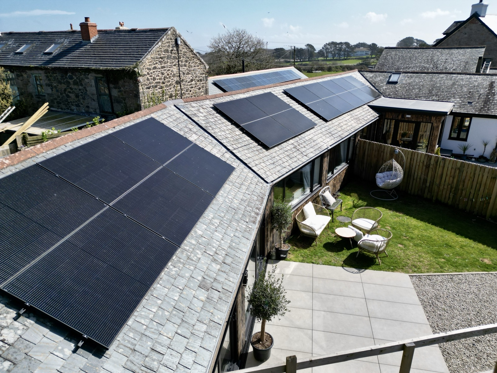
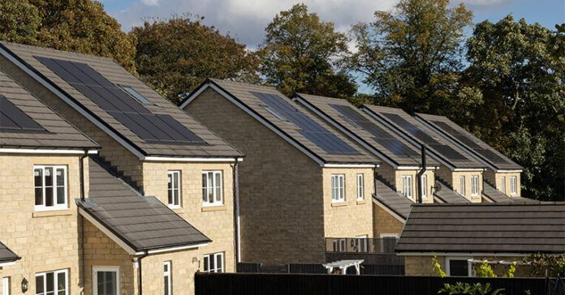
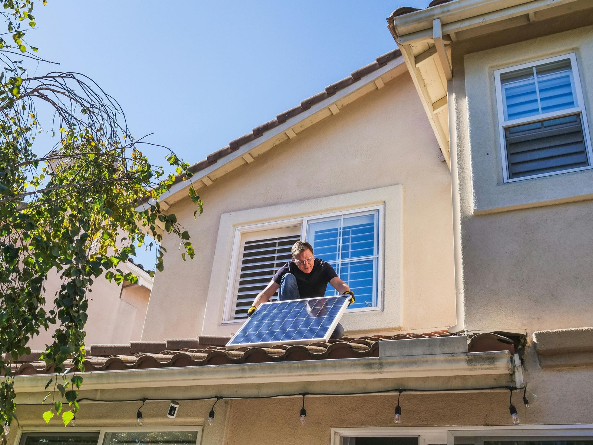
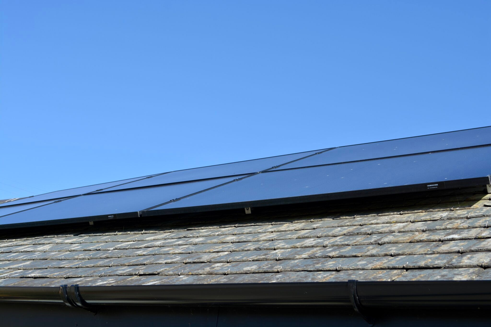

2025
24 October 2025 Gryd and Shoosmiths Building for Tomorrow: Gryd & Shoosmiths’ Future Homes Standard Industry Briefing Gryd and Shoosmiths co-hosted a private industry briefing in October focused on the upcoming Future Homes Standard and what it means for low-carbon, all-electric new-build homes in the UK. Read the write up
2 October 2025 Renewable Energy Magazine Brits with rooftop solar saved £471m on energy bills in the last year 1.6m UK households now generate their own power from rooftop solar and saved an estimated £471m on energy bills over the last year, according to analysis of government data by Gryd. Read the article 22 September 2025 Thrive in Construction Future-Proof Housing: Transforming the way new homes access renewable energy Gryd’s CEO Mohamed Gaafar appeared on the Thrive in Construction Podcast to talk to host Darren Evans about Gryd’s work unlocking the benefits of solar for homeowners and helping developers future-proof their housing stock. Watch the episode 8 September 2025 BusinessGreen Norfolk development first to benefit from fully-funded solar and battery scheme East Anglia developer Zero In Developments has partnered with solar energy provider Gryd to deliver homes with full-sized solar and battery storage systems – at no cost to homebuyers. Read the article
30 June 2025 Roofing Today The government’s Solar Roadmap sets out a new era of energy independence The Solar Roadmap will play a major role in delivering both the government’s mission for the UK to become a clean energy superpower and its Clean Power 2030 Action Plan. Read the article
4 June 2025 The Times Homeowners lead UK’s rooftop solar surge — but shrinking system sizes reveal hidden challenge The UK’s residential rooftop solar market is outpacing commercial and industrial rooftop installations by three-fold, new data reveals. Read the article 30 April 2025 BusinessGreen How Gryd is signing up new housing schemes to its solar subscription model Self-confessed built environment ‘nerd’ Mohamed Gaafar reflects on how his interest in liveable spaces and work on Saudi mega-cities led him to co-found a UK-first solar subscription service. Read the interview
28 April 2025 Inside Housing Councils now outpace private homeowners in rooftop solar uptake Local authorities in the UK are outpacing private homeowners in their rates of rooftop solar adoption, according to research by Gryd. Read the article 22 February 2025 Construction UK Magazine Solar’s ‘Rooftop Revolution’ Can Energise – Not Imperil – Construction Industry The clean energy transition has been steadily building momentum for years now, but this year solar’s ‘rooftop revolution’ is set to make particularly big political and economic waves. So, how will the construction industry rise to the occasion in 2025 and take advantage of the opportunity that the solar movement presents? Read the articleWriting about funded solar? Talk to our press desk.
We publish our own data on rooftop solar uptake, council deployment and new build compliance, and we can put you in front of the people who run the sites.
press@gryd.energy